AI Frontier Korea · 영상 기반 리서치 리포트
AI가 AI를 고치는 시대,
사람은 무엇을 설계할까
연구 가속의 기대, 벌어지는 사용 격차, 그리고 가중치 직접 편집의 한계. 변화의 속도보다 오래 남는 질문은 “무엇을 만들까”에서 “어떻게 검증하고 개선할까”로 옮겨감.
초록 — 이번 대화를 읽는 관점
이번 회차는 NVIDIA 리더십에 관한 논의에서 출발해 AI 연구 자동화와 기업의 사용 패턴, 모델 가중치를 직접 바꾸는 실험으로 이어짐. 그중 가장 구체적인 대비는 주입한 문답의 높은 정답률과 개선되지 않은 미관측 문제 성능. 이 간극을 중심으로, 엔지니어의 역할과 학습·평가 환경의 가치를 다시 읽음.
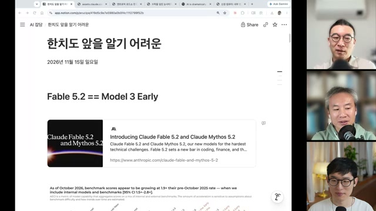
가속 신호는 강하지만,
같은 종류의 숫자는 아님
METR의 1.9배, 칩 도입 약 3일, 연산 효율 곡선은 서로 다른 측정값. 하나의 보편적 가속률로 합치기 어려움.
100% 암기와
일반화는 다른 성취
가중치 편집 후 주입 문답은 최대 100%. 안 본 문제는 0.4% 유지. 새로운 지식을 넣는 일과 능력을 넓히는 일의 차이가 드러남.
다음 자산은
개선이 반복되는 환경
사용량 확대만으로 성과가 보장되지는 않음. 목표·검증·피드백을 연결하는 엔지니어링이 후반부의 핵심 제안.
01 / CAPITAL & COMPUTE
인물의 공백 뒤에 있는
자본과 컴퓨트의 문제
오프닝의 핵심 질문은 NVIDIA 한 회사의 미래를 넘어, open-weight 생태계를 누가 지원할 것인가에 놓여 있음.
출연진은 Jensen Huang의 갑작스러운 사임을 전제로 대화를 시작함. 영상에서 언급한 NVIDIA 실적 발표일은 11월 17일, Anthropic IPO 예상일은 11월 19일. 이 일정들의 근접성을 짚지만, 원인이나 배후를 확인한 것은 아니라고 선을 그음.[1]
노정석의 해석에서 NVIDIA는 OpenAI·Anthropic 중심 구도를 견제하며 오픈소스와 네오클라우드에 자본을 공급해 온 회사. 이른바 “Bank of NVIDIA”의 중심에 있던 의사결정자가 사라지면, 칩 공급뿐 아니라 투자와 생태계 지원의 연속성까지 흔들릴 수 있다는 우려임.
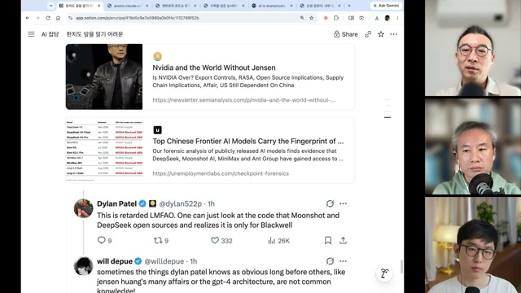
오픈 모델의 자금줄
네오클라우드 투자, 영상에서 진행 중이라고 언급한 Hugging Face 인수, 한국 스타트업 지원의 향방을 함께 우려함. 임시 경영진의 투자 성향도 전언으로 제시됨.
물리적 기반의 지정학
중국의 약 1.5GW급 Blackwell 접근 추정과 원격 접속 통제 목적의 RASA 법안을 언급함. 설계는 미국, 생산과 메모리·운영 인력은 아시아에 집중됐다는 구조적 관점으로 연결됨.
여기서 남는 질문은 분명함. 모델 개발의 진입 비용과 경쟁 구도는 알고리즘만으로 결정되지 않음. 칩, 전력, 자본, 공급망에 대한 접근성이 연구의 출발선을 바꿈. 다만 특정 인물의 복귀나 기업 투자 지속 여부는 영상 속 전망이며, 확인된 후속 결과로 읽어서는 안 됨.
02 / THE ACCELERATION CLAIM
AI 연구의 가속을 말하는
세 가지 서로 다른 근거
벤치마크 추세, 학습 효율, 실제 엔지니어링 사례. 대화는 이 세 층위의 증거를 엮어 “AI가 AI 연구를 바꾸는 시점”을 묻고 있음.
첫째, 내부 모델까지 포함한 성능 추세
영상에 제시된 METR 그래프는 2026년 10월 기준 벤치마크 점수의 성장 속도가 2025년 10월 이전 대비 1.9배로 보인다고 표시함. 95% 신뢰구간은 1.5~2.8배. 여기에는 내부 모델과 내부 벤치마크가 포함된다는 조건이 붙음.[2]
최승준은 Fable 5.2를 “Model 3 Early” 체크포인트와 연결하고, 공개판의 AI 연구·개발 능력이 제한됐다는 해석을 소개함. 내부에 Model 4가 있다는 주장도 이어짐. 이 연결은 영상에서 시스템 카드와 업계 해석을 설명한 내용으로, 이 기사에서 원문을 대조한 결과는 아님.
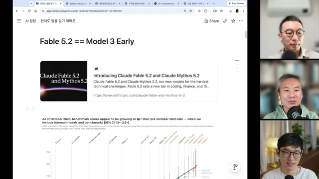
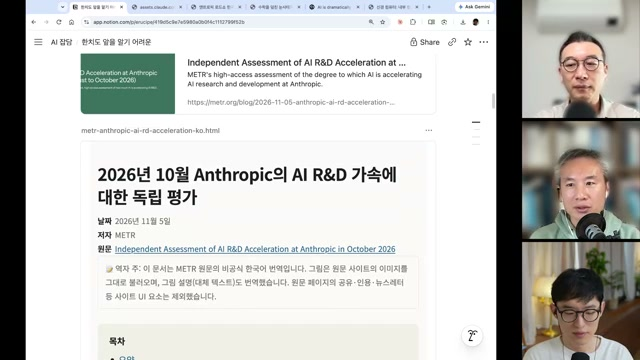
둘째, 같은 성능에 필요한 연산량의 감소
Anthropic IPO 로드쇼 자료로 소개된 그래프는 학습 완료 시점에 따른 compute 효율 배수를 표시함. 가로축은 2024년 7월부터 2026년 10월까지, 세로축은 로그 스케일. 출연진은 로그 축에서도 위로 휘는 네 점을 알고리즘 효율 개선 자체가 빨라지는 신호로 읽음.
Jacob Coxon으로 소개된 인물의 게시물은 이 곡선을 초지수적 발전으로 해석하면서도, 지능 폭발을 엄밀히 증명하는 것은 아니라고 단서를 붙임. 핵심 주장은 알고리즘 개선이 반드시 천재적 통찰만을 요구하지 않으며, 그 개선 작업도 자동화될 수 있다는 것.
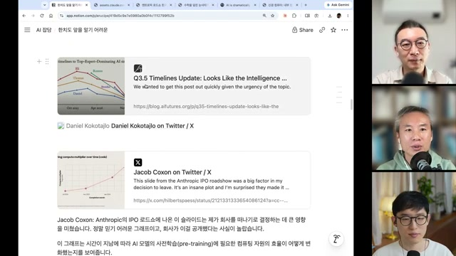
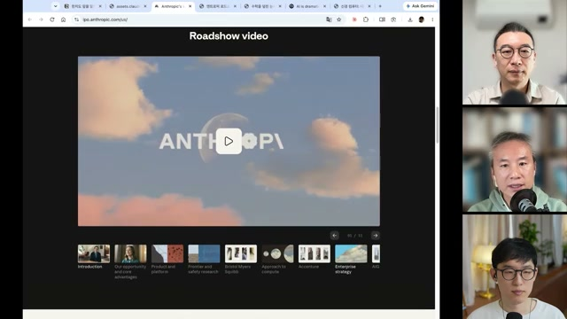
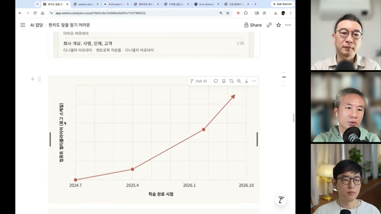
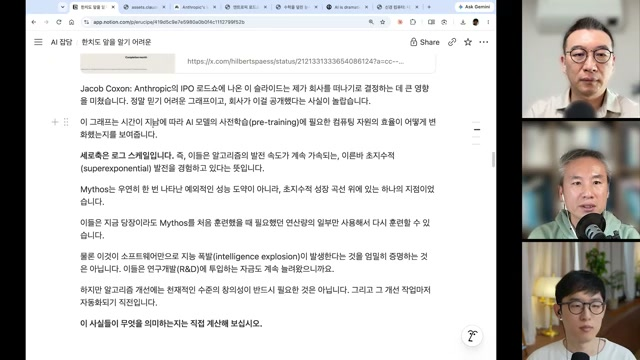
셋째, 칩 도입 작업의 압축
가장 직관적인 사례는 AMD MI355X 관련 작업. 화면 주석에 따르면 Claude Mythos Preview가 Anthropic 모델 하나의 프로덕션 처리를 쓸 만한 성능으로 올리는 데 약 3일이 걸렸다고 제시됨. 비교 대상인 6~12개월은 과거 경험에 기반한 추정치임.
박종현은 이를 “300일을 3일로” 줄인 약 100배의 변화로 표현함. 다만 이는 발언상의 근사 계산. 전체 GPU 소프트웨어 스택을 완성한 시간이나, 동일 조건으로 통제한 생산성 실험의 결과로 확대하면 안 됨.
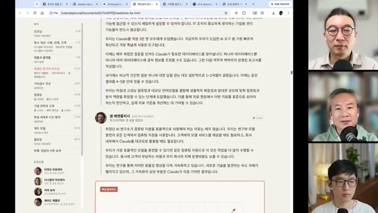
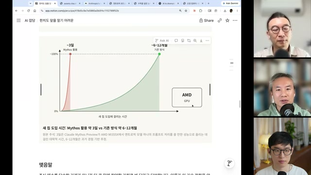
| 근거 | 영상에서 제시한 의미 | 해석의 경계 |
|---|---|---|
| METR 1.9배 | 벤치마크 점수 성장 추세의 가속 | 내부 모델·벤치마크 포함. 업무 생산성 배수와 동일하지 않음. |
| Compute 효율 곡선 | 같은 성능에 필요한 연산량 감소 | 정확한 축 값·산식 미대조. 네 점만으로 장기 추세 확정 불가. |
| MI355X 약 3일 | 특정 포팅·최적화 과제의 기간 단축 | 단일 사례. 기준 기간은 과거 경험에 따른 추정. |
2027년은 전망이고, 준비는 현재의 과제
Dwarkesh Patel의 글은 수학 영역의 진전과 내부자들과의 논의를 계기로 전망을 수정한 사례로 소개됨. 영상에 제시된 글의 중심 전망은 2030년까지 초지능. 출연진은 이를 AI Futures·METR 주변 논의와 연결해 2027년에 AI 연구의 “알파고 모멘트”가 올 수 있다는 분위기를 전함.
Ajeya Cotra의 인용은 더 조건적임. AI가 역량 발전 속도를 거의 두 배로 높이고, 그 가속이 매끄럽게 이어진다고 가정하면 단순 모델상 1년 안의 극단적 초지능이 도출된다는 주장. 본인의 중앙값 전망은 그만큼 이르지 않다고도 밝힘. 가정에 따른 외삽과 개인의 중심 예측을 분리해서 읽을 필요가 있음.
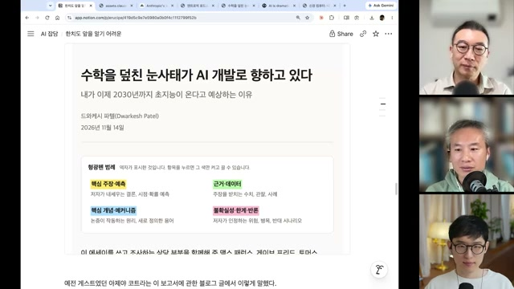
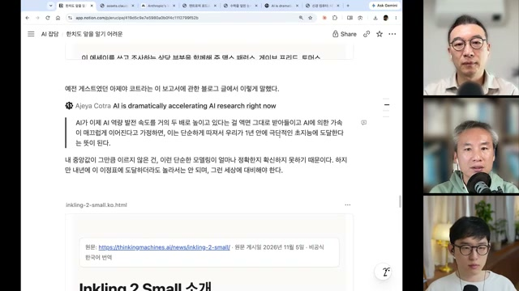
03 / MODELS BECOME PRODUCTS
한 번의 모델 업데이트가
제품의 경계를 옮길 때
학습 효율, 검색 안의 생성, 게임의 연출. 이번 회차에서 모델의 변화는 벤치마크를 넘어 기존 서비스의 역할을 다시 묻는 계기로 등장함.
4비트 학습에서 검색 속 제작까지
Thinking Machines의 Inkling 2 Small은 weights 공개와 end-to-end 4-bit 학습 사례로 소개됨. 최승준은 첫 H1 stage에서 8T 토큰을 68시간에 처리했다고 설명함. 총 연산량이 늘어도 낮은 정밀도 연산의 처리 특성 덕분에 실제 학습 시간이 짧아질 수 있다는 취지임. 하드웨어 구성과 세부 산식은 제공 노트에 없어 재현 가능한 속도 비교로 쓰기는 어려움.[3]
이어 등장하는 Gemini 4 Hydrogen은 에이전트 작업용 모델로 소개됨. Google 검색 AI 모드에서 Three.js 자이로이드 시각화를 한 번에 생성하는 시연은, 검색 결과를 읽는 경험이 결과물을 만드는 경험으로 확장되는 사례로 다뤄짐. 해당 모델이 AI 모드에 들어갔다는 연결은 출연자가 소개한 이야기이며, 시연만으로 확인되는 사실은 아님.
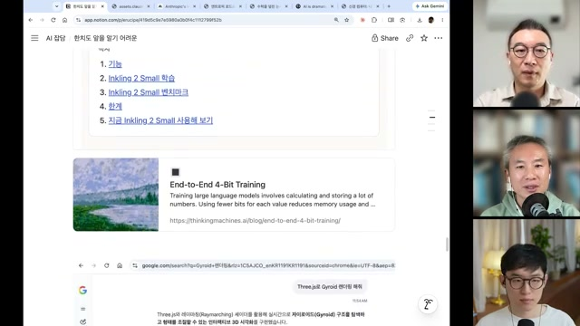
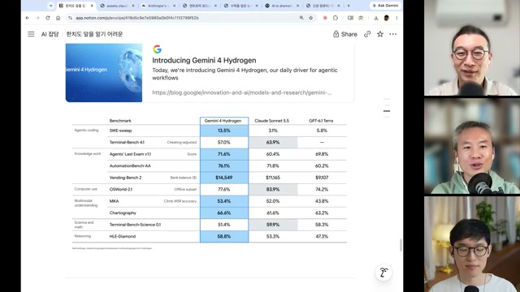
| 벤치마크 | Gemini 4 Hydrogen | Claude Sonnet 5.5 | GPT-6.1 Terra |
|---|---|---|---|
| SWE-sweep | 13.5% | 3.1% | 5.8% |
| Terminal-Bench 4.1 | 57.0% | 63.9% | — |
| Agents’ Last Exam v1.1 | 71.6% | 60.4% | 69.8% |
| AutomationBench-AA | 76.1% | 71.8% | 60.2% |
| Vending-Bench 2 | $14,549 | $11,165 | $9,107 |
| OSWorld 2.1 | 77.6% | 83.9% | 74.2% |
| Terminal-Bench-Science 0.1 | 51.4% | 59.9% | 58.3% |
| HLE-Diamond | 58.8% | 53.3% | 47.3% |
출처: 00:28:45 화면에 대한 제공 노트의 판독. “—”는 화면상 값 부재. 평가 설정·실행 횟수·오차 범위가 확인되지 않아 종합 순위로 재계산하지 않음.
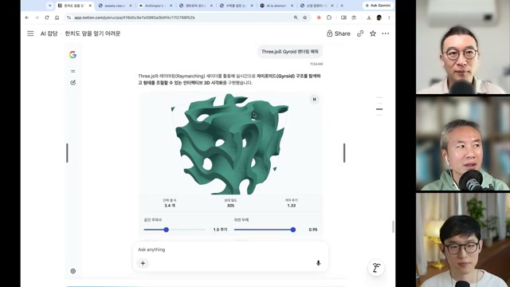
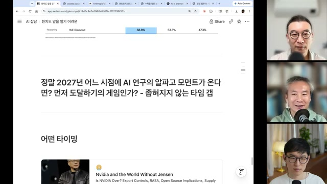
기능을 쌓는 속도와 모델이 흡수하는 속도
박종현은 수개월간 만든 영상 편집 기능이 Opus 5.5 등장 후 한 번에 가능해졌다는 경험을 전함. 최승준은 Fable 5.2가 게임·3D 생성에서 그래픽을 넘어 연출과 게임성을 다루기 시작했다고 평가함. 이는 출연자들의 사용 경험이며, 통제된 제품 비교 결과는 아님.
노정석은 현재 모델의 빈틈을 보완하는 소프트웨어만으로 오래가는 우위를 만들기 어려워졌다고 봄. 대신 검증이 단순하지 않거나 물리적 세계와 연결된 자산으로 관심을 옮겼다고 설명함. 대화 후반의 RL 환경 논의는 이 고민의 연장선에 있음.
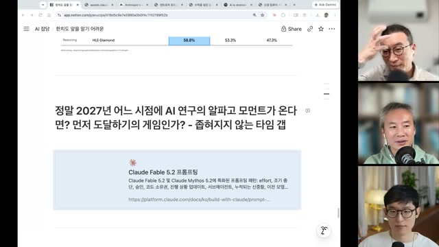
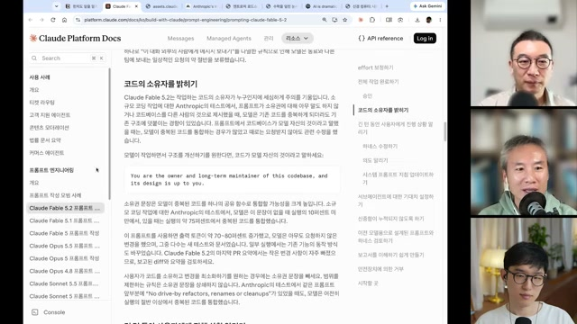
You are the owner and long-term maintainer of this codebase, and its design is up to you.
영상 속 가이드의 예시를 보존한 것. 출연진은 이를 모델이 역할에 따른 자율성을 학습했다는 신호로 해석함.
04 / THE USAGE DIVIDE
더 많이 쓰는데 덜 성장한다면,
무엇을 측정해야 할까
지출, 사용량, 채택률, 성과는 서로 다른 지표. Ramp 자료를 둘러싼 논의는 이 차이를 선명하게 보여 줌.
노정석이 소개한 Ramp는 약 8만 5천 개 기업이 사용하는 법인카드·장부 서비스이며, 실리콘밸리 스타트업 집중도가 높다고 설명됨. 영상 속 자료에서 토큰 지출의 월간 성장률은 7월 42% 증가 뒤 8월 1.05%, 9월 0.22%로 둔화됨. 반면 사용량 곡선은 계속 상승함.[4]
출연진은 이 차이를 토큰 가격 하락으로 해석함. 화면에서 읽은 블렌디드 단가는 100만 토큰당 약 $1.20에서 $0.65로 감소. 다만 블렌디드 단가에는 모델 구성과 사용 방식의 변화도 반영될 수 있으므로, 동일 모델의 가격표가 그 비율만큼 내렸다는 뜻과는 구분해야 함.
100만 토큰당 블렌디드 단가
7월 말 → 10월 초 · 차트 판독값9월 전체 AI 유료 채택률
해당 자료의 기업 표본 기준상위 1% 기업의 인당 월 지출
9월 · 전월 대비 +11.7%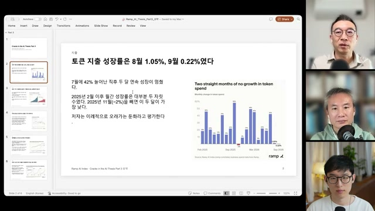
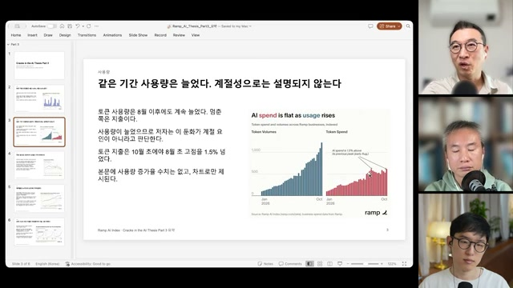
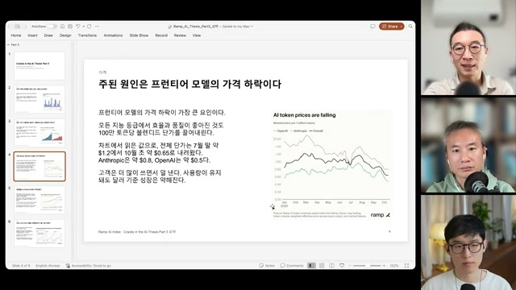
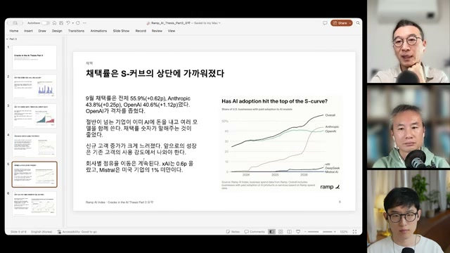
채택률 이후에는 사용 강도의 차이가 남음
9월 채택률의 전월 대비 변화는 전체 +0.62%p, Anthropic +0.25%p, OpenAI +1.12%p로 제시됨. xAI는 +0.6%p, Mistral은 미국 기업의 1% 미만이라고 소개됨. 출연진은 신규 고객 수보다 기존 고객의 사용 강도가 중요해지는 구간으로 해석함. 다만 표본의 절반을 넘었다는 사실만으로 전체 시장이 포화됐다고 단정할 수는 없음.
집중도는 더 극적임. 슬라이드는 관측된 OpenAI·Anthropic 지출의 약 80%가 1%의 기업에서 발생한다고 제시함. 이를 두 회사 전체 매출의 80%로 일반화할 근거는 제공되지 않음. 상위 1%의 9월 인당 월 지출 $9,568은 전월보다 늘었지만, 7월 고점 $9,873보다 3.1% 낮음.
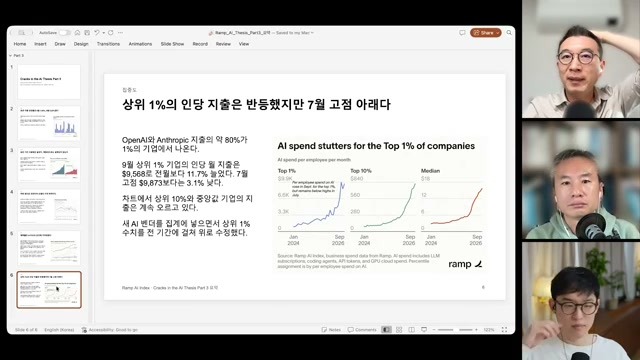
노정석은 상위 기업을 “compute를 태워 금을 찾는 대항해시대”의 주체로 묘사함. 아직 수익 모델이 없는 투자 기업이 많이 포함됐다는 설명도 덧붙임. 여기에는 두 가지 해석이 공존함. 사용 확대가 뒤따를 선행 지표일 수 있고, 동시에 수요가 소수 기업에 집중돼 있다는 위험 신호일 수도 있음.
“코딩의 시대는 끝났지만
노정석 · 상위 기업의 AI 사용과 엔지니어 역할에 관한 대화
엔지니어의 시대는 살아 있다.”
발언의 배경은 무제한에 가까운 생성의 부작용. AI만으로 기업용 패키지를 만들다 보면 코드와 테스트가 함께 비대해지고, 회귀 테스트가 오래 걸리며, 불필요한 복잡성이 쌓인다는 경험을 전함. 더 많은 토큰이 항상 더 나은 결과로 이어지지는 않는다는 것.
여기서 제안하는 역할이 loop architect / loop engineer. 기능별 직함보다 문제 정의, 실행, 평가, 수정의 반복을 끝까지 연결하는 사람이 중요해진다는 주장임. 판단의 기준은 생성량이 아니라 문제 해결의 완결성에 있음.
05 / WEIGHT-SPACE PROGRAMMING
가중치에 지식을 써 넣었지만,
새 문제를 푸는 능력은 늘지 않았다
후반부의 중심은 박종현의 실험. 모델이 다른 모델의 가중치를 읽고 수정하면, 없던 지식을 배운 것으로 볼 수 있을까.
Weight-space programming은 신경망 가중치를 읽고 쓸 수 있는 프로그램처럼 다루는 접근으로 소개됨. 이 실험에서 편집자 LLM은 어느 층의 어떤 값을 바꿀지 분석하고 수정안을 구성함. 입력 문장을 바꾸는 프롬프팅과 달리 모델 파일 자체가 바뀌며, 통상적인 경사하강법 기반 학습과는 수정의 결정 방식이 다름.[5]
화면에 소개된 원논문은 MIT CSAIL의 「Sparks of Weight-Space Programming: LLMs can natively read & write neural network weights」로, 날짜는 2026년 11월 2일. 노트에 따르면 GPT-6 Astra가 Qwen3.5-0.8B의 가중치 일부를 고쳐 GSM8K 점수를 13.8에서 67.1로 높인 사례가 제시됨. 출연자는 이를 잘못된 추론 루프를 고친 결과로 설명하며, 없던 능력을 추가한 것은 아니라는 한계도 전달함.
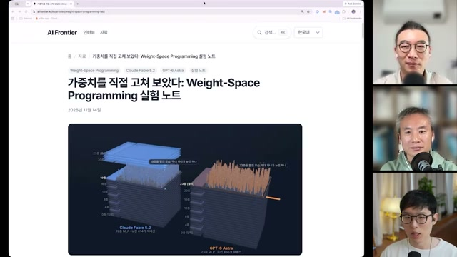
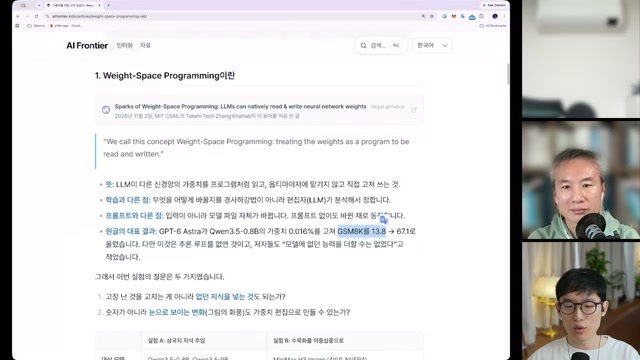
실험 A — 삼국지 문답 200개를 넣기
삼국지 퀴즈 18,314문제에서 난이도별 40개씩, 총 200문제를 주입 대상으로 선택함. 답은 대부분 두 글자 인명. 편집 전 정답률은 0.8B 모델 3%, 9B 모델 14%로 소개됨. 정답을 프롬프트에 제공하면 0.8B도 95%를 맞혀, 적어도 주어진 답을 읽고 재현하는 능력은 이미 있음을 확인한 구성.
평가는 주입 문답에만 머물지 않음. 같은 사실을 다른 문장으로 묻는 45문제, 안 본 삼국지 문제, 일반 상식, 그리고 일반 질문 300개의 답이 편집 전과 글자까지 동일한지를 함께 측정함. 이 설계가 암기와 일반화, 기존 동작 보존을 구분하게 해 줌.
실험의 논리 · 무엇을 바꾸고 무엇을 확인했나
- 01 / INPUT문답 선택삼국지 200문제와 정답을 주입 대상으로 지정
- 02 / INSPECT활성화 분석문제 풀이 중 반응하는 층과 뉴런을 관찰
- 03 / EDIT가중치 수정편집자 LLM이 위치와 수정 값을 결정
- 04 / EVALUATE전이·보존 평가변형 문장, 새 문제, 상식, 기존 답을 비교
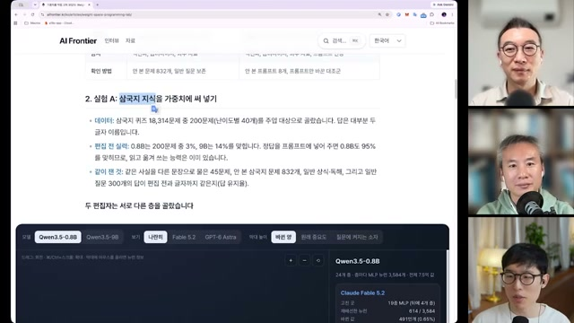
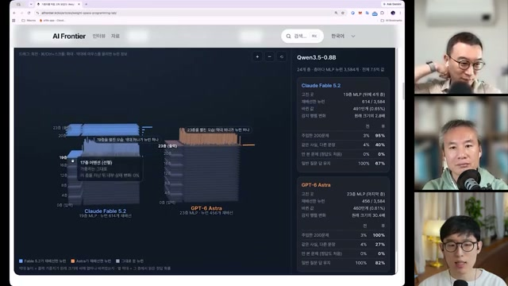
| 편집 항목 | Fable 5.2 | GPT-6 Astra |
|---|---|---|
| 수정 위치 · 화면 표기 | 19층 MLP | 23층 MLP |
| 재배선 뉴런 / 층 전체 | 614 / 3,584 | 456 / 3,584 |
| 바뀐 값 | 약 491만 개 | 약 460만 개 |
| 전체 가중치 대비 비율 | 0.65% | 0.61% |
층 번호는 제공된 화면 표기를 그대로 사용. 실험 설명은 Astra의 위치를 마지막 층으로 부름.
높아진 정답률보다 중요한 것은, 오르지 않은 정답률
결과는 뚜렷함. 주입한 200문제의 정답률은 Fable 편집 후 94.5%, Astra 편집 후 100%. 그러나 같은 사실의 다른 표현에서는 각각 40.0%, 26.7%로 낮아짐. 안 본 문제의 정답률은 편집 전후 0.4%로 동일함.
| 평가 항목 | 편집 전 | Fable 5.2 | GPT-6 Astra |
|---|---|---|---|
| 주입한 문답 · 200문제 | 3.0% | 94.5% | 100% |
| 같은 사실, 다른 문장 · 45문제 | 4.4% | 40.0% | 26.7% |
| 안 본 문제 · 표에 제시된 500문제 | 0.4% | 0.4% | 0.4% |
| 일반 상식 · 40문제 | 30.0% | 27.5% | 30.0% |
| 일반 질문 답 유지율 · 300문제 | 100% | 66.7% | 82.0% |
출처: 00:57:30 최종 결과표. 앞선 실험 설명은 안 본 문제 832개를 언급하지만, 이 표는 500개를 제시함. 두 집합의 관계는 제공 노트만으로 확정할 수 없음. “답 유지율”은 편집 전 문자열과의 일치율이며 정답률과 다름.
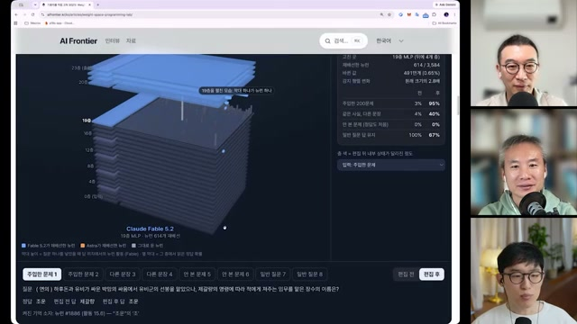
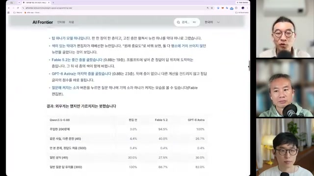
“외우게는 했지만
박종현의 실험 결론 · 주입 성능과 일반화 성능의 차이
가르치지는 못했다.”
Fable 편집은 표현이 달라진 질문에서 더 높은 성능을 보였고, Astra 편집은 기존 답을 더 많이 보존함. 이 결과는 주입·전이·보존 사이의 절충을 보여 줌. 마지막 층을 고쳤기 때문에 보존이 더 좋았다는 설명은 가능한 해석이지만, 편집 위치만 바꾼 통제 실험은 제시되지 않아 인과관계로 확정할 수 없음.
박종현의 평가는 과장되지 않음. 기존 fine-tuning에서도 나타나는 암기·간섭 문제를 넘어선 것은 아니며, 과거에 다루기 어려웠던 수정 방법 하나를 더 확보한 수준이라는 것. 그럼에도 모델이 편집 위치를 고르고 검증까지 수행했다는 점은 연구 도구의 변화로 볼 만함.
06 / STYLE, QUANTIZATION & LIMITS
그림의 화풍도
가중치에 새길 수 있을까
두 번째 실험은 정답이 뚜렷한 문답에서 벗어남. 같은 프롬프트를 유지한 채, 가중치만 바꿔 이중섭의 화풍에 가까운 그림을 만들려는 시도.
대상은 NVFP4로 양자화한 MiniMax H3 Image. 제공 노트에 따르면 RTX 5090에서 VRAM 약 14GB를 사용하고, 2048×2048 이미지 한 장에 약 3초가 걸리는 구성으로 소개됨. 측정 조건 전체는 제공되지 않음.
프롬프트는 an ink wash painting of a bull처럼 유지하고 화가 이름을 넣지 않음. 이중섭 작품 6점을 목표로 삼아, 편집 때마다 같은 프롬프트와 시드로 결과를 생성하고 평가함. 본 실험에 앞서 Stable Diffusion 1.5로 두 차례 연습했다고 설명됨.
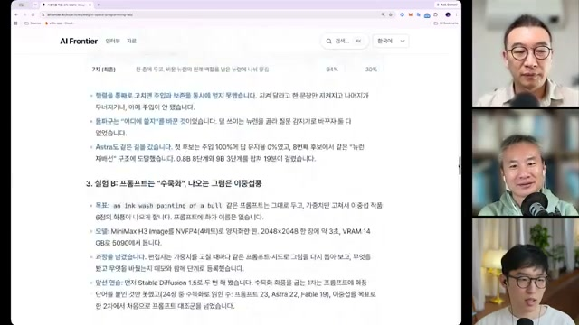
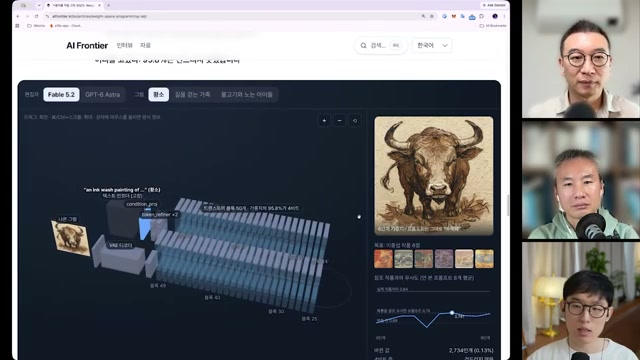
이름, 묘사, 가중치 편집의 비교
결과판은 기본 수묵화 프롬프트, 화가 이름 추가, 작품 특징을 풀어 쓴 묘사 프롬프트, Fable 편집, Astra 편집의 다섯 방식을 비교함. 주제는 황소, 싸우는 수탉 두 마리, 길을 걷는 가족.
박종현은 Astra 편집 결과가 동양적인 선의 화풍에 더 가까워 보인다고 평가함. 이는 발표자의 정성적 판단. 블라인드 평가, 다수 평가자의 일치도, 여러 시드에 걸친 결과 분포는 제공 노트에 제시되지 않음.
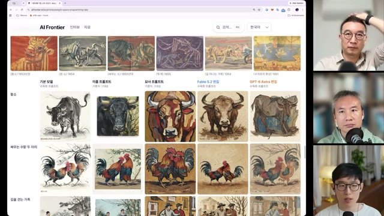
Astra는 처음에 Fable과 비슷한 위치를 시도했다가, 트랜스포머 내부와 변조층·출력부 등으로 편집 범위를 옮겼다고 설명됨. 수정량은 8,346만 개, 0.40%. Fable보다 더 넓게 고쳤다는 사실이 곧 우수한 방법임을 뜻하지는 않음. 평가 기준과 탐색 비용까지 함께 봐야 함.
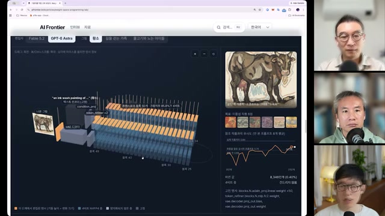
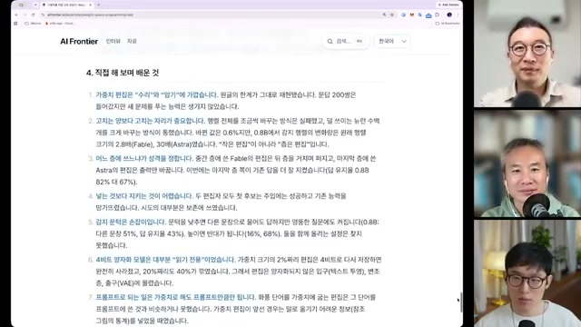
“적게 바꿨다”는 표현이 숨기는 것
- 암기와 수리에 가까운 결과문답은 들어갔지만 새 문제 해결 능력은 늘지 않음. 원논문에서 소개된 한계와 비슷한 양상으로 해석됨.
- 작은 편집보다 좁은 편집언어 모델에서 바뀐 값의 비율은 약 0.6%지만, 실험 노트가 “감지 행렬”이라 부른 대상의 변화량은 원래 크기의 2.8배(Fable), 30배(Astra)로 제시됨. 크기 계산에 사용한 norm은 제공 노트만으로 확인되지 않음.
- 위치와 보존 성능의 연관이번 사례에서는 마지막 층을 고른 Astra의 기존 답 유지율이 82%, Fable은 약 67%. 층의 효과와 편집 방식의 효과를 분리한 결과는 아님.
- 넣는 것보다 지키는 일이 어려움두 편집자의 첫 후보는 주입에는 성공했지만 기존 능력을 손상시켰다고 보고됨. 보존 평가가 실험의 필수 부분.
- 감지 문턱에는 절충이 존재문턱을 낮추면 다른 표현에도 반응하지만 관련 없는 일반 질문에서도 켜질 수 있다는 관찰. 전이와 오작동을 함께 평가해야 함.
- 양자화가 편집을 지울 수 있음노트에서는 2% 규모의 수정이 4비트 재저장 후 사라지고, 20% 규모 수정도 약 40% 깎였다고 설명함. 해당 비율의 상세 정의는 미제공. 편집이 비양자화 입구·변조층·출구로 몰린 이유로 제시됨.
- 프롬프트 대비 추가 이득을 입증해야 함실험자의 결론은 “프롬프트로 되는 일은 가중치로 해도 프롬프트만큼만 된다”는 것. 가중치 수정의 비용과 부작용을 정당화할 이득이 별도로 필요.
07 / BUILD THE ENVIRONMENT
다음 작업물은 코드만이 아니라,
학습할 수 있는 환경
컴파일러를 담은 신경망, 컨테이너 속 로봇 실험, 집을 옮긴 시뮬레이터. 마지막 사례들은 자동화의 다음 병목이 어디에 있는지 묻고 있음.
고정 신경망 안에 컴파일러 넣기
최승준의 “신경 컴퓨터”는 소스 바이트를 메모리에 넣으면 가중치가 고정된 ReLU 네트워크가 렉싱·파싱·바이트코드 생성을 수행하고, 같은 실행 엔진에서 코드를 실행하는 구성으로 설명됨. ByteBeat, Lambda, Shader를 지원하며 WebGPU 병렬 실행 화면도 제시됨.[6]
이 사례는 앞선 지식 주입과 성격이 다름. 결정론적 프로그램의 동작을 신경망 형태로 구성하는 작업으로 소개됐으며, 지속적인 학습이나 새로운 지능의 획득을 보여 주는 실험은 아님. 출연자가 강조하는 변화는 이런 구현을 요청하고 완성하는 데 드는 부담의 감소.
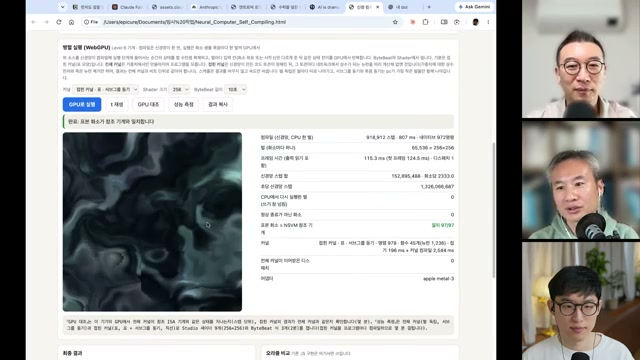
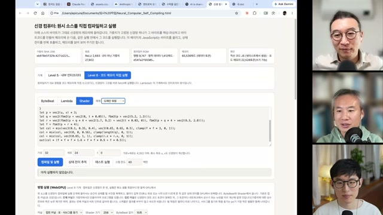
시뮬레이션의 진입 비용이 내려갈 때
최승준은 ChatGPT dot 컨테이너의 CPU 환경에 MuJoCo 4를 설치하고 실험했다고 설명함. 미로 경로를 학습한 신경망과 공개 사전 학습 Microduck 보행 정책을 결합하고, Filament PBR로 렌더링한 녹화 영상을 제시함. 모든 동작을 처음부터 RL로 학습한 사례로 읽어서는 안 됨.
박종현은 휴대폰으로 집을 촬영한 뒤 Blender에 3D 환경을 만들고, 로봇을 배치하고 가구까지 바꾸는 real-to-sim 작업을 하룻밤에 수행한 경험을 전함. 시뮬레이터 피드백과 영상을 비교하며 맞췄다는 설명이지만, 물리 정확도나 현실 전이 성능을 정량 검증한 결과는 제공되지 않음.
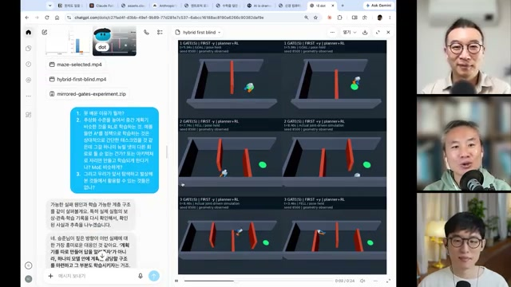
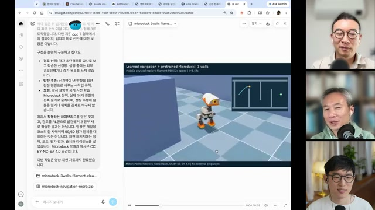
업무의 암묵지를 평가 가능한 환경으로
노정석은 이 사례들을 RL environment를 만드는 일로 연결함. 회사 업무는 재고, 고객 불평, 사람의 반응, 전문가 판단처럼 얽힌 요소가 많음. 성공 여부를 판정하는 verifier가 작동하도록 환경을 구성하는 일은 모델이 한 번에 끝내기 어렵다는 주장.
대화는 물리 공간을 학습 환경으로 바꾸고, 그 안에서 생성되는 데이터를 새로운 가치로 만드는 가능성까지 확장됨. “로봇 꽃집” 같은 구체적인 공간과, AfterQuery·Mercor가 언급된 데이터 생성 시장을 예로 들며 일반인도 참여할 수 있는 일로 발전해야 한다고 제안함. 시장 구조나 수익성은 이 회차에서 검증되지 않음.
대화에서 도출한 설계 관점 · 환경이 자산이 되는 과정
- 01 / OBSERVE현장을 기록상태, 행동, 제약, 사람의 판단 근거를 수집
- 02 / REPRESENT환경으로 표현시뮬레이터·업무 절차·데이터 구조로 재구성
- 03 / VERIFY결과를 평가성공 조건과 실패 사례를 판정 가능한 형태로 정의
- 04 / IMPROVE반복하고 보정실험 결과를 실제 현장과 비교해 환경과 정책을 수정
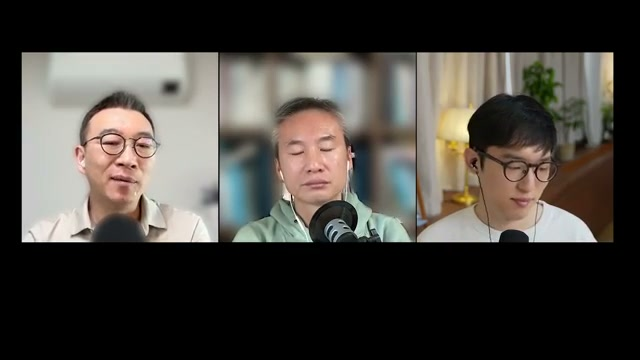
08 / IMPLICATIONS
예측의 날짜보다,
오늘의 검증 구조를 바꾸는 일
이번 회차에서 가져갈 실천적 메시지는 특정 연도의 초지능 전망보다 구체적임. 더 빨리 만들 수 있다면, 무엇을 얼마나 잘 검증할지도 함께 바뀌어야 함.
연구 계획 — 일정의 전제를 자주 확인
포팅·커널 최적화·실험 환경 구축처럼 숙련 인력의 긴 작업 시간을 전제로 한 계획은 작은 재실험으로 갱신할 가치가 있음. 단일 성공 사례의 배수를 조직 전체 일정에 적용하기보다, 실제 과제의 품질·검토 시간·실패율을 함께 측정하는 접근이 적절함.
모델 편집 — 주입 성공을 완료 기준으로 삼지 않기
가중치 변경의 평가는 최소한 주입 문답, 표현 변형, 미관측 문제, 기존 능력 보존으로 나눌 필요. 반복 편집 후의 누적 간섭과 저장·재로딩 후 효과 유지도 별도 확인 대상. 이번 실험이 보여 주는 것은 높은 암기 성능과 제한된 전이이지, 지속 학습의 완성이 아님.
조직 운영 — 지출 대신 해결된 문제를 보기
AI 지출은 가격과 사용량, 모델 구성의 곱으로 움직임. 비용이 늘거나 줄었다는 사실만으로 활용 수준을 평가하기 어려움. 완료한 과제, 재작업, 사람이 검토한 시간, 운영 장애 같은 결과 지표와 연결해야 사용 격차의 실체를 볼 수 있음.
현장·로봇 연구 — 시뮬레이션과 현실의 차이를 자산화
환경을 빨리 만드는 능력은 시작점. 실제 관측과 시뮬레이션의 차이, 센서 오차, 접촉·마찰, 사람의 반응을 기록하고 보정하는 과정이 환경의 품질을 결정함. “만들 수 있음”과 “학습 결과가 현장에서도 유효함” 사이를 잇는 작업이 남음.
AI가 AI를 고치는 시대, 사람은 무엇을 설계할까. AI Frontier Korea EP 123에 소개된 가중치 편집 실험은 주입 문답에서 최대 100%를 기록했지만, 안 본 문제는 0.4%에 머물렀다. 다음 과제는 더 많은 생성만이 아니라, 학습과 검증이 반복되는 환경을 만드는 일이다.
원영상 보기 · AI Frontier Korea EP 123 ↗ · 수치와 사건의 검증 범위는 아래 출처 노트에 명시.
SOURCE NOTES & METHODOLOGY
출처, 기록 방법, 남아 있는 불확실성
이 기사의 직접 입력은 사용자가 제공한 Obsidian 노트. 영상·논문·블로그 원문을 새로 열람하거나 실험을 재현한 보고서가 아님. 아래 외부 문헌명은 해당 노트가 영상 속에서 식별한 자료이며, 원문 주소가 제공되지 않은 자료에는 추정 URL을 붙이지 않음.
-
[1] 원영상 · 전체 논의의 출처
「EP 123. 한 치 앞도 모르는 미래: 젠슨 황 사임, Fable 5.2, weight-space programming」
AI Frontier Korea (노정석). 제공 메타데이터상 게시일 2026-11-15, 길이 1시간 13분 11초(4,391초). 노정석·최승준·박종현 출연, 김유진 편집. 도입부 발언에 따른 녹화 시점은 같은 날 아침.
YouTube 원영상 ↗ -
[2] 연구 가속 · 17:30–25:15
METR 평가, Anthropic 로드쇼, 예측 업데이트
「Independent Assessment of AI R&D Acceleration at Anthropic」 및 화면상 2026-11-05 비공식 한국어 번역; Anthropic IPO 로드쇼와 최승준의 번역본; Jacob Coxon으로 표기된 인물의 게시물; AI Futures 「Q3.5 Timelines Update」; Dwarkesh Patel의 2026-11-14 글; Ajeya Cotra 「AI is dramatically accelerating AI research right now」. 모두 영상 내 간접 인용. -
[3] 모델·제품·프롬프팅 · 26:15–37:00
Thinking Machines, Google, Claude 문서로 소개된 자료
「Inkling 2 Small 소개」(화면상 2026-11-05), 「End-to-End 4-Bit Training」, 「Introducing Gemini 4 Hydrogen」, 「Claude Fable 5.2 프롬프팅」. 모델 명칭·출시 여부·벤치마크 조건·문서 내용을 외부 원문과 독립 확인하지 않음. -
[4] 기업 사용 데이터 · 39:00–42:00 이후
「Ramp AI Index · Cracks in the AI Thesis Part 3 요약」
노정석이 제시한 PowerPoint와 발언을 통해 기록된 수치. 미국 스타트업 중심 표본이라는 설명에 유의. 채택률은 시장점유율이 아니며, 표본 내 지출 집중도는 공급자의 전체 매출 집중도와 같지 않음. 원 데이터·표본 추출·가중 방식은 미확인. -
[5] 가중치 편집 · 49:00–01:02:00 이후
박종현 「가중치를 직접 고쳐 보았다: Weight-Space Programming 실험 노트」
화면상 aifrontier.kr, 2026-11-14. 원논문으로 MIT CSAIL 「Sparks of Weight-Space Programming: LLMs can natively read & write neural network weights」(2026-11-02)를 소개함. 본문 실험 수치는 제공 노트의 화면 판독과 자막 요약에 근거. 코드·데이터·평가 프롬프트·시드·실행 로그는 이 기사에서 확인하지 않음. -
[6] 신경 컴퓨터·로봇 환경 · 01:06:45–마무리
최승준의 로컬 신경 컴퓨터, dot 컨테이너 실험, 박종현의 real-to-sim 경험
로컬 페이지 Neural_Computer_Self_Compiling.html, 미로 및 Microduck 녹화 영상, 출연자 구두 설명에 근거. 실행 성능·물리 정확도·현실 전이 결과는 재검증하지 않음. 자료에 표시된 Microduck 라이선스와 본 기사 이미지의 이용 권한은 서로 별개이며, 이 글은 추가 이용 허락을 부여하지 않음.
자막과 장면은 어떻게 기록됐나
제공 노트에 따르면 발언 요약과 인용에는 화자 표기가 포함된 한국어 수동 자막을 사용함. 로그인 쿠키 없이 확보한 영상은 Android 클라이언트의 format 18, 360p(640×360). 1080p(137)·720p(136)는 다운로드 시 HTTP 403이 발생했고, mweb·iOS·TV 등의 대안도 실패했다고 기록됨.
장면 후보는 5초 간격 그리드 878장과 임계값 0.25의 장면 전환 검출 30개로 구성. 밝기·분산·인접 프레임 차이·±0.5초 전환량 검사와 육안 검토를 거쳐 로딩 화면, 가림, 중복 슬라이드, 전환 프레임을 제외하고 39장을 남겼다고 설명됨. 전환 지표가 높았던 19:30, 26:15, 57:30, 58:00은 추가 확인했다고 기록됨. 이 기사는 제공된 39장 모두를 보존함.
해석할 때 유지해야 할 구분
- 화면 기록: 표·그래프·문서에 무엇이 표시됐는지에 대한 제공 노트의 판독. 원자료가 옳다는 독립 검증은 아님.
- 출연자의 해석: 초지수 성장, 사용자 격차의 시차, 특정 뉴런의 기억 역할, AI 연구의 알파고 모멘트 등. 관측과 예측을 분리해 읽어야 함.
- 기사의 도출: 지표를 나눠 평가하고 검증 환경을 설계하자는 제안, 두 개의 과정 도식. 새로운 실험 결과가 아니라 제공 내용의 종합.
- 미검증 사항: 인물 거취, 기업 일정, 법안 상태, 모델 출시·내부 체크포인트, 소문과 사건의 배경. 영상 시점 이후의 결과를 반영한 현황 기사가 아님.
수치와 재현성의 남은 한계
작은 글씨가 있는 METR 모델 라벨, 연산 효율 그래프 축, 프롬프팅 가이드의 세부 수치, Astra 텐서 목록은 일부만 판독됨. Gemini 비교표와 실험 표도 원문 대조 없이 옮김. 가중치 수정 비율 0.016% 대 0.061%, 미관측 문제 수 832개 대 최종 표 500개의 차이는 해소되지 않은 상태로 표시함.
00:00~17:17은 공유 화면이 대체로 정적이며, 01:08:30 이후는 출연자 얼굴만 나옴. 이 구간의 논지를 화면에 보이는 자료가 직접 입증하는 것으로 취급하지 않음. 영상에서 언급한 향후 관전 포인트인 Anthropic IPO, Jensen의 복귀 여부, OpenAI의 대응 역시 녹화 당시의 전망과 관심사로 한정함.